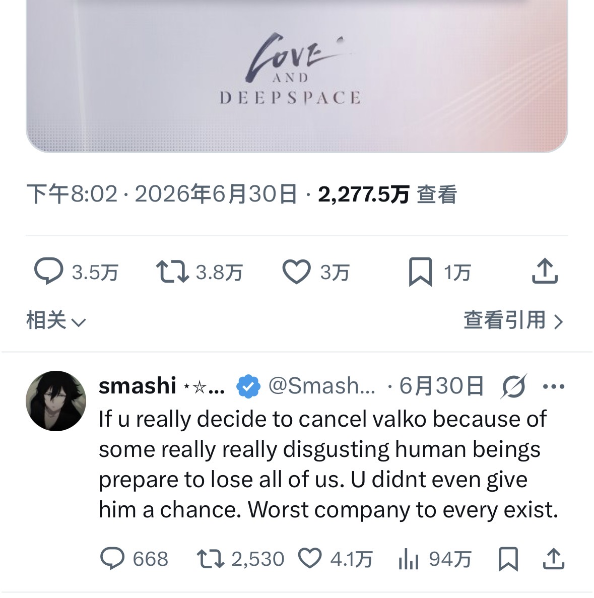

评论数比喜欢数还要多 5k 个？
而且由于是英语推，spam 回复应当是极少的。
《恋与深空》的这条宣布取消新角色推文，是環状線自 2022 年上推以来见到的第一个评论数大于喜欢数的推文。
環状線说句不好听的，《恋与深空》运营能做出这种决定，或许是因为脑子被门夹烂了。从游戏运营的角度来讲， 这个决定所造成的代价相当巨大：一是失去了海外市场，游戏从此以后只能蜗居在国门之内；二是沉重打击了海内外玩家对游戏的信任。環状線可以说，这个决定，断送了《恋与深空》的未来，甚至也断送了叠纸这个游戏厂商的未来。
现在，大型连续剧「史上最强女拳 VS 现代最强女拳」将持续为您播出（并非）
而且由于是英语推，spam 回复应当是极少的。
《恋与深空》的这条宣布取消新角色推文，是環状線自 2022 年上推以来见到的第一个评论数大于喜欢数的推文。
環状線说句不好听的，《恋与深空》运营能做出这种决定，或许是因为脑子被门夹烂了。从游戏运营的角度来讲， 这个决定所造成的代价相当巨大：一是失去了海外市场，游戏从此以后只能蜗居在国门之内；二是沉重打击了海内外玩家对游戏的信任。環状線可以说，这个决定，断送了《恋与深空》的未来，甚至也断送了叠纸这个游戏厂商的未来。
现在，大型连续剧「史上最强女拳 VS 现代最强女拳」将持续为您播出（并非）
